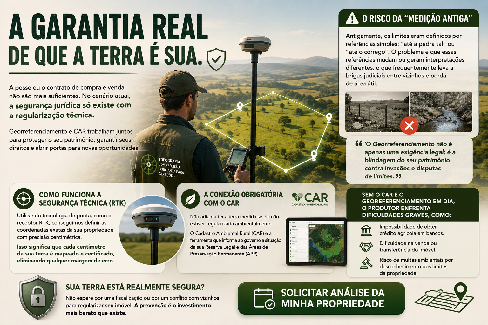

Se você possui um imóvel rural, provavelmente já ouviu falar sobre o Georreferenciamento e o CAR (Cadastro Ambiental Rural). Mas você sabe por que eles são vitais para a proteção do seu patrimônio?
O Risco da "Medição Antiga"
Antigamente, as cercas e limites eram definidos por referências simples: "até a pedra tal" ou "até o córrego". O problema é que essas referências mudam ou geram interpretações diferentes, o que frequentemente leva a brigas judiciais entre vizinhos e perda de área útil.
Precisão Centimétrica com Tecnologia RTK
Utilizando tecnologia de ponta, como o receptor RTK, conseguimos definir as coordenadas exatas da sua propriedade. Isso significa que cada centímetro da sua terra é mapeado e certificado, eliminando qualquer margem de erro e dando tranquilidade ao proprietário.
A Conexão Obrigatória com o CAR
Não adianta ter a terra medida se ela não estiver regularizada ambientalmente. O Cadastro Ambiental Rural (CAR) é a ferramenta que informa ao governo a situação da sua Reserva Legal e das Áreas de Preservação Permanente (APP).
A falta desses documentos pode causar prejuízos imediatos:
- Bloqueio de Crédito: Impossibilidade de obter financiamentos agrícolas em bancos.
- Travas na Venda: Dificuldade extrema na venda ou transferência legal do imóvel.
- Multas Ambientais: Risco de autuações por desconhecimento dos limites reais da propriedade.
- Insegurança Jurídica: Vulnerabilidade a disputas de terra com vizinhos.
Sua terra está realmente segura?
Não espere por uma fiscalização ou por um conflito com vizinhos para regularizar seu imóvel. A prevenção é o investimento mais barato que existe.
Solicitar Análise Técnica da minha Propriedade